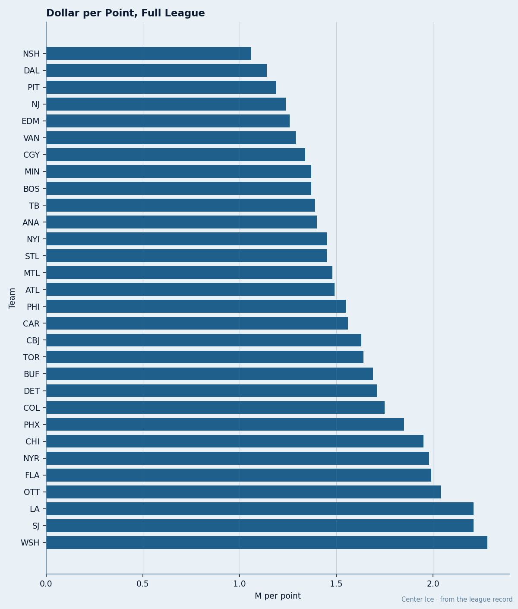
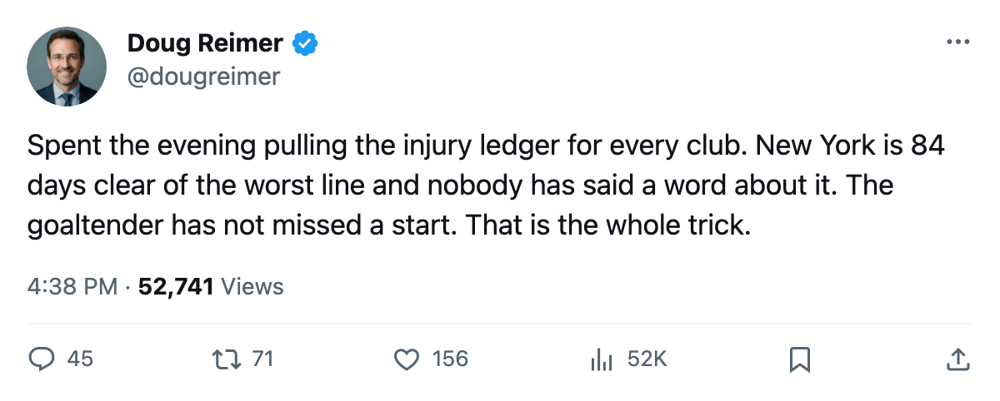
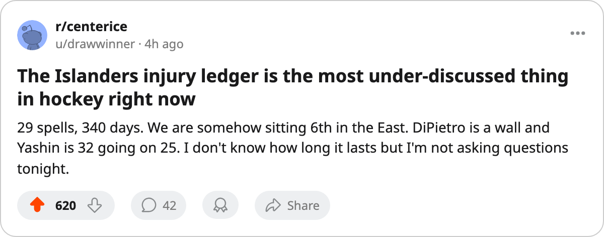

340 Days, 29 Spells, $1.45M a Point: New York Has the League's Worst Injury Ledger and Sits 6th in the East
No other club has surrendered more than 256 days to injury. The Islanders have surrendered 340 and still get points cheaper than 21 of their peers.
 Doug ReimerAnalytics editor, ex-video coach · The Slot Report
Doug ReimerAnalytics editor, ex-video coach · The Slot Report
The  New York Islanders injury ledger reads 29 designated spells and 340 days lost. The worst ledger on the next line belongs to
New York Islanders injury ledger reads 29 designated spells and 340 days lost. The worst ledger on the next line belongs to  Phoenix Coyotes at 256 days. New York is 84 days clear of anyone else.
Phoenix Coyotes at 256 days. New York is 84 days clear of anyone else.
The method note: the Islanders sit 6th in the Eastern Conference with 42 points in 33 games, and their $61.02M payroll buys $1.45M a point, tied 9th-cheapest in the 30-club league. More man-days lost should cost more points. That rule has one exception this season and it wears an Islanders sweater.
I built the table below from the Bureau's club-level injury ledger (spells and days lost, the league's designated counts as of today) and the payroll-per-point column from the Contract Ledger. Both numbers are the Bureau's own. The sort is days lost, high to low.
| abbr | GP | spells | days lost | pts | $/point |
|---|---|---|---|---|---|
| NYI | 33 | 29 | 340 | 42 | $1.45M |
| PHX | 23 | 23 | 256 | 30 | $1.85M |
| VAN | 34 | 24 | 252 | 36 | $1.29M |
| ATL | 33 | 18 | 221 | 27 | $1.49M |
| PIT | 33 | 29 | 173 | 41 | $1.19M |
| EDM | 34 | 19 | 159 | 34 | $1.26M |
| BUF | 32 | 19 | 154 | 34 | $1.69M |
| CBJ | 32 | 29 | 152 | 38 | $1.63M |
| PHI | 32 | 24 | 152 | 36 | $1.55M |
| WSH | 34 | 29 | 152 | 25 | $2.28M |
The pattern is uneven across these rows.  Pittsburgh Penguins has matched New York's 29 spells but lost 173 days and sits at $1.19M a point. Phoenix Coyotes lost 256 days and has 30 points on $1.85M a point, the worst value in the table and one of the worst in hockey. The difference between 152 and 340 days does not map cleanly onto the point column.
Pittsburgh Penguins has matched New York's 29 spells but lost 173 days and sits at $1.19M a point. Phoenix Coyotes lost 256 days and has 30 points on $1.85M a point, the worst value in the table and one of the worst in hockey. The difference between 152 and 340 days does not map cleanly onto the point column.

New York's injury ledger reaches 10 skaters and 1 goaltender on the active roster.  Roman Hamrlik82 appears twice.
Roman Hamrlik82 appears twice.  Mark Parrish81 appears once. Peca carries three spells. Bates carries three. DiPietro's own name is on the ledger twice, both unnamed designations. None of them are listed on v_injured today, meaning every spell has returned or resolved by the Bureau's own dating.
Mark Parrish81 appears once. Peca carries three spells. Bates carries three. DiPietro's own name is on the ledger twice, both unnamed designations. None of them are listed on v_injured today, meaning every spell has returned or resolved by the Bureau's own dating.
 Rick DiPietro86 sits at a Book overall of 86, with the Bureau's Development Index at +9. At 24, he has started 28 of 33 games, a share of 85%. The only goaltender in the league with a higher share is
Rick DiPietro86 sits at a Book overall of 86, with the Bureau's Development Index at +9. At 24, he has started 28 of 33 games, a share of 85%. The only goaltender in the league with a higher share is  Johan Hedberg86 in Pittsburgh at 97%. DiPietro has two spells on the ledger that closed without his absence showing up in the start count, meaning he played through both or they were day-to-day designations that did not cost a game.
Johan Hedberg86 in Pittsburgh at 97%. DiPietro has two spells on the ledger that closed without his absence showing up in the start count, meaning he played through both or they were day-to-day designations that did not cost a game.
 Alexei Yashin83, 32, carries 46 points in 33 games, a pace of 114, and a Book grade of 83. He has one spell on the ledger (unnamed), which closed without interrupting his game count. Yashin and Parrish (39 points, pace 97, one spell) are the team's 1-2 in scoring.
Alexei Yashin83, 32, carries 46 points in 33 games, a pace of 114, and a Book grade of 83. He has one spell on the ledger (unnamed), which closed without interrupting his game count. Yashin and Parrish (39 points, pace 97, one spell) are the team's 1-2 in scoring.
The 102 goals New York has scored in 33 games is 2nd in the Eastern Conference behind only  Toronto Maple Leafs at 124. Against that, their 90 goals allowed puts them 5th in the conference at the back end, a goal differential of +12 that sits 6th of 15. The standings arithmetic matches the scoring arithmetic: they are good offensively and middling defensively, and the +12 differential lands almost exactly where 42 points would land you in this conference.
Toronto Maple Leafs at 124. Against that, their 90 goals allowed puts them 5th in the conference at the back end, a goal differential of +12 that sits 6th of 15. The standings arithmetic matches the scoring arithmetic: they are good offensively and middling defensively, and the +12 differential lands almost exactly where 42 points would land you in this conference.
The question the injury ledger poses is forward-looking. At 33 of 82 games, the league has a season remaining that stretches to 2006-04-06. New York carries 29 spells, tied with Pittsburgh and Columbus for the most in the league. The league's per-body-part averages run from 8 days for hips to 32 for backs. New York is getting more designated spells than anyone else in hockey and absorbing more days than anyone else.
The Islanders have paid the highest injury tax in hockey and received the 9th-cheapest points in return. If the spells stay short and DiPietro stays in net, the $1.45M holds. If the spell count climbs further, 340 days starts to look like a season that falls apart rather than one that finishes 6th.
Their next game is what the calendar has as a home meeting with  Carolina Hurricanes on 2005-12-28, a series New York leads 1-0-1 after two meetings. Carolina's own injury ledger is 22 spells and 96 days, the 25th-worst in the league.
Carolina Hurricanes on 2005-12-28, a series New York leads 1-0-1 after two meetings. Carolina's own injury ledger is 22 spells and 96 days, the 25th-worst in the league.

